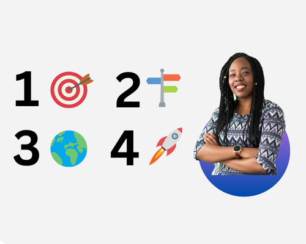

Unlock Your Potential with Our Four Stage Framework
We believe in fullstack mentoring. Every aspiring software developer has unique needs and goals. That’s why we’ve developed a comprehensive four-part framework designed to provide personalised, structured, and practical support at every stage of your learning journey. Our framework ensures that you receive tailored mentorship, hands-on experience, and career development opportunities, enabling you to reach your full potential and succeed in the competitive tech industry. Here’s why our framework stands out and how it can help you achieve your goals.
Assessment and Goal Setting 🎯
- A one-on-one meeting to discuss your aspirations and learning methods
- Benchmark your current technical skills and identify strengths and weaknesses.
- Collaboratively define short-term and long-term goals, including specific skills to learn, projects to complete, and milestones to achieve.
- Your bespoke personalised plan is exported
Structured Learning and Guidance 📘
- Tailored learning support and materials deployed
- Mentorship sessions to review progress, discuss challenges, and provide guidance
- Practical projects that apply theoretical knowledge to real-world scenarios, enhancing learning through experience
- Provide constructive feedback on assignments and projects, encouraging iterative improvement
Practical Application and Real-World Experience 🌍
- Projects that simulate real-world problems relevant to the student's desired industry or job role.
- Code reviews and pair programming sessions to teach best practices and collaborative coding techniques.
- Encourage participation in hackathons, coding competitions, and open-source projects to build practical skills and a portfolio.
- Connect you to internships or job shadowing opportunities with partner companies to provide hands-on industry experience.
Career Development and Networking 🚀
- Support in creating a professional resume and portfolio that showcases your projects, skills, and achievements.
- Conduct mock interviews, including technical and behavioral questions, to build your confidence and interview skills.
- Introduce you to industry professionals, mentor's network, and relevant communities to expand your professional network.
- Upon completing our program, you will emerge as a highly skilled and accomplished programmer.
Our Mentoring Packages
Essential Career Development Package 🎓
- Access to our four stage framework
- Professional resume and portfolio creation to showcase projects, skills, and achievements.
- Mock interviews focusing on technical and behavioral questions to build confidence and interview skills.
- Access to a network of industry professionals and relevant communities for networking opportunities.
- Guidance on participating in hackathons, coding competitions, and open-source projects to build practical skills and a portfolio.
- Monthly career development webinars and Q&A sessions.
Advanced Career Development Package 🚀
- Comprehensive resume and portfolio review with personalised feedback and optimisation.
- Multiple mock interview sessions with detailed feedback and improvement strategies.
- Personal introductions to key industry professionals and exclusive networking events.
- Mentorship on selecting and contributing to high-impact hackathons, coding competitions, and open-source projects.
- Bi-weekly career coaching sessions to set and achieve career goals.
- Access to an exclusive job board with opportunities from partner companies.
- Lifetime access to career development resources and a community of like-minded professionals.